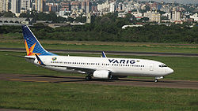
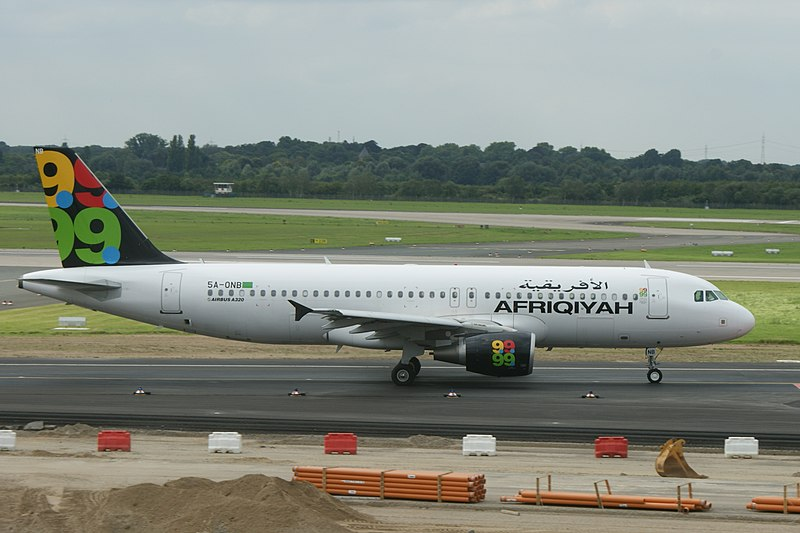

Boeing 737-800 |
Airbus A320-200 |
|  |  |
| O 737-800 era uma versão mais longa do 737-700, substituindo diretamente o 737-400. O modelo 800 foi lançado pela Hapag-Lloyd Flug (atualmente Hapagfly) alemã em 1994, entrando em serviço em 1998. O 737-800 tem capacidade para 162 passageiros em uma configuração de 2 classes, ou 189 em classe única. Possui um alcance de 5 670 km (3060 milhas náuticas) e é equipado com motores CFMI CFM 56-7. Seu equivalente direto da Airbus é o modelo A320. O Boeing 737-800 no Brasil foi primeiramente utilizado pela VARIG/VRG e posteriormente pela Gol. | O alcance com 150 passageiros para o A320-200 é de 5 400 km (2 900 mn). É equipado por 2 turbofans CFMI CFM56-5 ou IAE V2500 com empuxo entre 25 500 a 27 000 libras de força (113 kN a 120 kN). O único concorrente é o Boeing 737-800. O A320 no Brasil é utilizado pela LATAM Airlines Brasil, Azul Linhas Aéreas e pela Itapemirim Linhas Aéreas. |
| https://pt.wikipedia.org/wiki/Boeing_737#:~:text=o%20Airbus%20A319LR.-,737-800,-Boeing%20737-800 | https://pt.wikipedia.org/wiki/Airbus_A320#:~:text=a%20200%20passageiros.-,A320,-A320%20da%20LATAM |
Lição importante
|
Um vídeo sobre a lição mais importante da aviação... "You can always go around..." ("Você sempre pode arremeter...".).
|
|
Desenvolvido por João Pedro